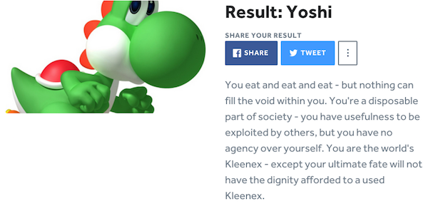
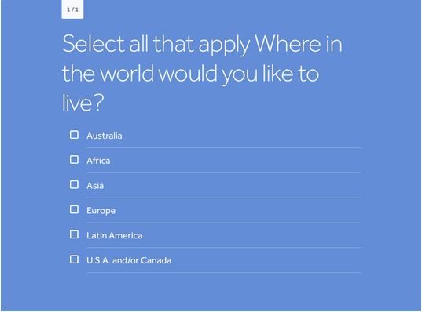
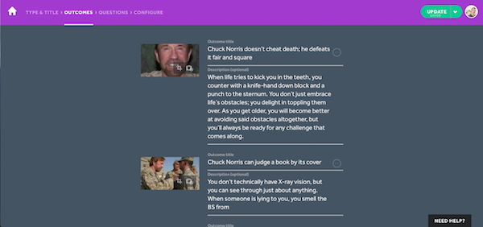

-
Stop Procrastinating Your Quiz Marketing Plan for 2015
Here we are, facing yet another New Year complete with resolutions and marketing plans. If using marketing quizzes are part of your plans for 2015, we
 recommend creating a quiz marketing plan right now.
recommend creating a quiz marketing plan right now. Don’t worry, it doesn’t have to be elaborate. However, a little planning now can help make marketing with viral quizzes easier and more effective. Use the tips below to start planning your quiz content creation strategy for 2015.
The Big Picture
Summarize what you want to accomplish with your quizzes for 2015. For example, will you be using quizzes strictly for lead generation or are you more interested in increasing engagement? There’s no right or wrong answer — it all depends on what you’re trying to achieve. But you should be clear on what you want to accomplish.
Your Ideal Quiz User
Next, define your ideal quiz user. Who do you want to reach with your quizzes? Your ideal quiz users will likely be identical to your existing (assuming you have them) marketing personas. If you do not have marketing personas, now’s the time to define them. After all, your ideal quiz users will drive virtually everything else you do, including quiz topics and where you’ll embed, share, and promote your quizzes.
Your Quiz Plan
Now that you know the marketing purpose and target audience for your online quizzes, it’s time to come up with a plan for the year.
For example:
. How often do you want to publish new quizzes? Weekly? Monthly? Quarterly?
. What general categories (such as pop culture, fitness, or business) will your quizzes cover?
. What specific topics will you cover within each broader category?
. What types of incentives will you offer to entice people to take your quiz?
. What types of offers and calls to action will you include at the end of the quiz?
The answers to these questions should align with your marketing purpose and target audience. For example, if you plan on using online quizzes for lead generation, your calls to action at the end of a quiz would involve some sort of opt-in form or giveaway. Likewise, if your target audience is made up of geeky millennials who love pop culture, your quiz topics will be much different than if your target audience consists of CEOs of financial services companies.
Your Quiz Content Calendar
Once you have clarified your intentions, understand your target audience, and have a general quiz marketing plan that includes quiz frequency and categories, it’s time to start brainstorming topic ideas and plotting out a quiz content calendar.
Marketers often use content calendars to plan their blog and social media posts. Why not use a content calendar to plan your quizzes, too? If you have an existing content calendar for blogging and social media, adding quizzes to the mix can help ensure that your quizzes follow the same monthly theme and/or support your other posts. If you’re focused only on quizzes, that’s fine too.
Start with a basic listing of each month such as:
January
. Week 1
. Week 2
. Week 3
. Week 4
February
. Week 1
. Week 2
. Week 3
. Week 4
The example above assumes a frequency of four quizzes per month, but you can adjust your calendar as desired. Once you have the basic calendar in place, look at your broad category list. Let’s say you have four main categories: Movies, Books, Food, and Nostalgia. One approach is to rotate through your categories. In our example, your calendar would start to look something like this:
January
. Week 1 – Movies
. Week 2 – Books
. Week 3 – Food
. Week 4 – Nostalgia
February
. Week 1 – Movies
. Week 2 – Books
. Week 3 – Food
. Week 4 – Nostalgia
Next, consider any holidays or monthly/seasonal events that you may want to address with quizzes. For example, the Academy Awards is in late February. It may make sense to have an Oscars theme all month long. Likewise, Valentine’s Day may provide inspiration. Note any important events or holidays for each month. If you have preexisting monthly themes for your blog and social media posts, make sure to note those as well. This information will come in handy later when it’s time to brainstorm individual quiz topics.
Here’s a snippet of what your quiz content calendar for January and February might look like:
January — New Year’s Resolutions, Martin Luther King Jr.
1. Week 1 – Movies
. Week 2 – Books
. Week 3 – Food
. Week 4 – Nostalgia
February — Valentine’s Day, Presidents Day, Academy Awards
. Week 1 – Movies
. Week 2 – Books
. Week 3 – Food
. Week 4 – Nostalgia
Now that you have your categories mapped out and have identified monthly themes, it’s time to start brainstorming ideas. Some ideas will come to you immediately based on how the categories relate to the monthly theme or holidays you’ve identified. If so, write down those ideas immediately in the appropriate section.
For example, when notating Martin Luther King Day for January, an idea for a quiz such as “Which Civil Rights Leader are You?” might come to mind — and it fits into your Nostalgia category. Fill in as many slots as you can based on your immediate impressions for the holidays and events while simultaneously keeping in mind your marketing purpose and target audience.
While holidays and seasonal events will provide you with a good start, you’ll still need to fill in the blanks. You can go either month by month, or category by category. Either way, have fun and use your creativity to come up with quiz topics. While you certainly can fill your content calendar in one brainstorming session, don’t feel as though you must complete the full year in one sitting. Plan on revisiting your plan each month and revising and brainstorming accordingly.
Creating a quiz marketing plan for 2015 is a worthy exercise. It will help you get focused, and you’ll have an informative document that will guide your quiz creation activities throughout the year.
-
Celebrate the New Year with Social Media Quizzes
Creating your own social media quizzes is nearly as fun as taking them. Part of the fun has to do with the subject matter — such as holidays, the upcoming Academy Awards, and pop culture. As we celebrate the New Year, why not kick it off with a New Year’s quiz?
Where to start? The possibilities are virtually unlimited. For example, you could create a New Year’s quiz along the lines of “How well do you know your New Year’s traditions?” Or, you could go with a days-of-the-year theme such as “Real Holiday or Made Up Holiday?” Other New Year’s topics include New Year’s resolutions, New Year’s celebrations, New Year’s party types, New Year’s songs, New Year’s drinks, and so on.
For instance, check out this quiz that aims to tell people how long they will keep their New Year’s Resolutions:
Once you have a topic, let the New Year’s quiz creation shenanigans begin! Use the tips below to start off the New Year with a bang:- Choose a popular quiz format – Several quiz types have proven to be popular such as “What ____ are you,” “This or That,” and “How well do you know ____” type quizzes. The quiz format will largely dictate the types of questions you ask as well as the final outcome of the quiz. We recommend choosing the quiz type and defining the outcomes (results) of the quiz before writing any questions and answers.
- Give your quiz an irresistible title – On the web, you only have a fraction of a second to make an impression. Thus, your quiz title needs to be short and snappy. Instead of “How well do you know your New Year’s traditions?” you might try “Are you a New Year’s Newbie?”
- Elaborate in the quiz description field – Now that you’ve got their attention, use the quiz description field to elaborate about the quiz. The description field provides you with yet another opportunity to convince people to participate. For example, if the quiz has an educational aspect to it, you could say something like, “Test your knowledge about New Year’s traditions from around the world and then check out some fresh new traditions you can try today.” Likewise, if you plan on offering a promotion at the end, by all means, tell your audience what’s at stake. Use the description field to say something along the lines of, “Take this quiz and receive a valuable New Year’s discount.”
- Select eye-catching images – Your quiz will get a lot more attention if you include eye-catching images. Obviously, you’ll want to start with a main image that represents the quiz, but don’t stop there! With Qzzr, you can use images throughout the quiz. Even if you skip images for individual questions and answers, we highly recommend find excellent images for each result. After all, when people share their quiz results on social media, their friends will see them. This is your chance to capture even more attention — and what better way to do it than with great, representative images?
- Write detailed “results” that make each quiz finisher look good – People share quiz results that they feel good about. Yet, New Year’s brings with it a great deal of soul searching and resolution making. Your audience may not feel so great after making their resolutions; they’re too disorganized; their finances are a mess; or they feel out-of-shape and flabby. The beginning of the year is a great time to boost their self-esteem with quiz results that they can feel good about.
- Take full advantage of the quiz-making features available to you – Despite how easy it is to create a social media quiz with Qzzr, you have several options available to you. Make sure to put them to good use. For example, you can use social media quizzes to do even more than engage your fans on social media sites; you can also add an opt-in at the end of the quiz to collect leads or present special offers based on individual quiz results. Use these options to your advantage.
Social media quizzes are fun any time of the year, especially so around big events like the start of a new year. Sign into your Qzzr account (or sign up for one if you don’t already have one), get creative, and create your own quiz to celebrate the New Year!
-
How to Make a Quiz Online Just Like BuzzFeed

Even without doing a scientific study, it’s safe to say that people love three things on the internet:
- cat videos
- celebrities behaving badly
- BuzzFeed quizzes
Although I can’t help you with the first two, I have a few insights about the third.
Yes, quizzes are wildly popular, and BuzzFeed has proven to be particularly effective at harnessing their virality. When Jonah Peretti started BuzzFeed in 2006, the company’s aim was to pinpoint exactly what makes content go viral. Naturally, his team ended up figuring out that people love quizzes; hence, we now have viral juggernauts like What State Do You Actually Belong In? (41.5 million views and counting) and Which Disney Princess Are You?
Now, with Qzzr, you can make a quiz online just like BuzzFeed, and embed it anywhere. You’re all set to make a quiz telling people what Nintendo character they are, what TV household they should be living in, or which Goonie they are. But before you jump in and start making your quizzes, here are a few tips that will help you learn how to quiz like the masters at BuzzFeed.
- Come up with a fun angle
No one would ever — or should ever — confuse a BuzzFeed quiz with a true scientific assessment. People are typically looking for a fun distraction with the goal of learning something interesting about themselves. So although it takes some forethought and creativity to develop a fun, shareable quiz, you needn’t worry about creating something that will yield a full scientific diagnosis.
Instead, think of ways to be entertaining. What is a compelling pop culture topic that will capture people’s attention? (BuzzFeed example: Which Jennifer Lawrence Movie Character Are You?) What can you bring up from the past that will stoke your audience’s collective nostalgia? (BuzzFeed example: How Well Do You Know The Lyrics To These ‘90s Rap Songs?) Or can you just think of a way to make people laugh? (BuzzFeed example: Is Chris Kirkpatrick Your One True Soulmate?)
- Come up with your results before writing your quiz
The most memorable part of your quiz will be the result that people get. Once they find out which Taylor Swift they are, for example, that is what they will share with their friends. So place your primary focus on coming up with enduring results with catchy descriptions. Then, you can go to work on coming up with questions that will guide people to the result that is best for them.
As you are writing your questions, you will have the option to map each answer option to one or more of your results. Consequently, it helps to know what those results are. That way, you will have an idea of what differentiates each of them, and this will help you come up with questions and answers for each result.
- Don’t blow it with your result descriptions
Think of your result description as a parting gift that you’re giving to the guests at your party. It’s not enough to tell them which Star Wars character they are — they need to know why they are Yoda.
In almost every case, it’s best to write your outcome descriptions in a way that compliments the people that take your quiz. Tell them that they’re awesome and to expect big things, and make them feel special for answering your questions in the manner that they did. In many cases, they might have been expecting a different result, so try to make them feel good about the one they got.
For example, KISSmetrics, an analytics platform, ran a quiz titled, “Which Tech Entrepreneur Are You?” When I took the quiz, I got Steve Jobs, and the outcome description just warmed my heart:

Of course, there are exceptions to the rule. This Which Nintendo Character Are You? quiz by Dorkly offered outright insulting descriptions:

This strategy worked for Dorkly because their descriptions were well-written and humorous, and the tone connected with their audience. Thanks to a heavy dosage of social shares, this quiz has been taken more than 220,000 times.
- Don’t write questions that suck
Now that you know what results people can get when they take your quiz, you’re ready to write out your questions. Think about what differentiates each of your results when you make a quiz online, and let that guide you to create questions that will do a decent job of assessing your audience.
So what separates each of your results? Perhaps one result could be for a person who is driven and ambitious, and another one is for someone who is comfortable and easygoing. Maybe each of them have different diets, interests, or lifestyles.
Then, try to think of creative ways to ask your questions. Maybe, for example, you want to find out about people’s activity level. You could ask something boring like, “What is your activity level?” The answer options would be, “High,” “Medium,” and “Low.” A better approach would be to say something like, “When you want to get somewhere, you _________.” The answer options could be, “run,” “crawl,” and “lay there and hope to be magically transported.”
- Spice up your quizzes with images and animated gifs
Don’t bore your audience with lines and lines of text. You don’t need images on every question, but it certainly helps to use them when you can.
For instance, compare this question:

…to this one:

Both questions have the exact same wording, but they make for an entirely different quiz-taking process. The first option had a background image and had pictures of each geographic region. It’s much more visually appealing and results in a pleasant, memorable quiz-taking experience for your audience.
And if a picture can say a thousand words, an animated gif can speak volumes. If you’re trying to use a picture that communicates clumsiness, you could throw in a picture of someone that appears to be falling down, or you could give them the full show with a gif:

- Combine all these elements to create a quiz that everyone loves
Creating a dynamite quiz is every bit as fun as taking one (if not more so). Let’s run through a short example, and we will incorporate each of the elements we have learned so far.
Let’s do a quiz about Chuck Norris “facts” — i.e. those absurdly hyperbolic statements about everyone’s favorite bearded martial artist. We’ll title it, “Which Chuck Norris Fact Is Most True About You?”
Now that we’ve got a topic and a title, the next step is to write out the outcomes. Here are the five facts that I’m running with:
- Chuck Norris doesn’t cheat death; he defeats it fair and square
- Chuck Norris can judge a book by its cover
- Chuck Norris can ice skate in unfrozen water
- Actions speak louder than words, unless they’re Chuck Norris’ words
Then, for each one, I need to write a short description to give a bit more information. This is your time to shine; people will often decide whether or not to share their result on social media based on the quality of the result description. If you’re witty, insightful, and able to tell people something interesting about themselves, you’ve got a winner. If you’re boring and cliched, you’ll be forgotten faster than a piece of motel art.
So here is my attempt at writing out the result description for “Chuck Norris doesn’t cheat death. He defeats it fair and square”:
When life tries to kick you in the teeth, you counter with a knife-hand down block and a punch to the sternum. You don’t just embrace life’s obstacles; you delight in destroying them. You’re always ready for any challenge that comes your way.
Once I’ve added a background image and photos for each result description, I’m ready to start writing my questions.

As you’re writing your questions, think about what distinguishes the results from each other. For example, “Chuck Norris doesn’t cheat death; he defeats it fair and square” could be a statement about someone’s ability to overcome challenges, and “Chuck Norris can judge a book by its cover” is an apt description for someone with great intuitiveness.
So a good question could be, “Which of these songs could be the theme song for your life?” And here are our answer options:
- Stronger by Kelly Clarkson. This will map to “doesn’t cheat death” because it’s all about thriving in the face of adversity
- You’re So Vain by Carly Simon. We’ll match this one with “judge a book by its cover” because it’s about seeing through the fake image a person is trying to convey.
- Waterfalls by TLC, and this one will go to “ice skate in unfrozen water”. Not only is there the “water” similarities, but the song is a great metaphor for going headstrong into something without considering the consequences.
- Bohemian Rhapsody by Queen. Obviously, given it’s lyrical brilliance, this one will go to “Actions speak louder than words, unless they’re Chuck Norris’ words”.

In this question, we ended up having four answer options which mapped to each of the four results. But you don’t need to worry about it working out like this. Not every question in this quiz will need to have four answer options. You can have one answer option map to more than one result, or you can have an answer option that maps to none of the results.
As I think about what other questions I could add, I will think about other distinguishing traits for each of the results: attitude, demeanor, preferences, dislikes, etc. Then, when people complete the quiz, they will feel sufficiently assessed and will have a stronger connection to the result they end up with.

Anything else?
So, do you feel sufficiently prepared to go out and make a BuzzFeed quiz? Is there anything else that wasn’t covered here? Please let me know in the comments!
-
How GamesRadar Harnessed the Power of Passionate Fans With a Quiz That Was Taken 40,000 Times
Last summer, ESPN’s Bill Simmons paid his annual visit to the National Sports Collectors Convention in Cleveland. He said this event “ranks somewhere between the Fourth of July and Sharknado” on his scale of “Favorite Annual Summer Traditions.”
According to Simmons, two things will always be a major part of any collectors convention: Mickey Mantle and Star Wars.
“You know what people will always love collecting? Mickey Mantle and Star Wars. In that order,” Simmons said. “They were asking $1,600 for (an) unopened box of Star Wars cards.”
Yes, people love their Star Wars. There is an entire Wikipedia page solely dedicated to whether Han Solo or Greedo shot first in their confrontation—and that page has been viewed more than 26,000 times in the last 30 days:

So… yeah. There’s plenty of people out there who feel passionately about Star Wars. With the release of the first teaser trailer for the new Star Wars movie, the fever pitch was particularly high, and so GamesRadar, a video game website, capitalized by launching a quiz titled, “How much do you actually know about Star Wars?” The quiz has now been taken more than 36,000 times.
The thing about passionate fan bases is they’re always ready to prove their knowledge. So when they hear someone issue a challenge, such as, “How much do you actually know about your favorite movie series?” they are all over it. Quizzes are a fantastic way to lay down the gauntlet to such audiences. “Think you know a lot about (fill in the blank)? Prove it!”Of course, the first step in creating a great quiz is knowing your audience. It just so happened that GamesRadar knew that their audience was into Star Wars, and this worked in their favor since Star Wars has some of the most passionate fans in the world. But if you dig into the interests of your audience, you’re bound to find something a majority feel passionately about. It might be One Direction. It could be NPR. Or, if we’ve learned anything from the National Sports Collectors Convention, it could be Mickey Mantle.
Either way, if you are able to hone in on a passionate fan base, you might have a viral quiz on your hands.
-
How Digital Camera World Turned a Tutorial Into a Quiz with a 10% Conversion Rate [Case Study]
I became a parent 7 months ago, and in preparation for the baby’s birth, I had to assemble a bunch of furniture: a crib, a dresser, and a rocking chair (to name a few). As someone who is mechanically challenged, I relied heavily on the accompanying step-by-step guides. I couldn’t have gotten the job done without them.
As helpful as they were, though, I had no desire to share my new knowledge on Facebook.
I bring this up because of the success of a quiz posted by Digital Camera World, an outstanding website that provides digital photography tips and techniques, digital camera reviews, photo editing lessons, and video tutorials. Their quiz, “How well do you know your Nikon camera?”, was essentially a collection of step-by-step photos from camera tutorials, and they were able to engage their audience by having them guess which image showed the best settings for the scenario presented.
“It was easy to make, easy to share, and what’s more, we found more than 10% of the people who took the quiz signed up for our newsletter to learn more Nikon tips,” said Jeff Meyer, Website Editor at Digital Camera World. “It’s been so successful that we’re working regular quizzes into our content plan.”
This was a brilliant way to repurpose content that some would consider boring and dry (step-by-step photos from camera tutorials) and made it something fun and worth sharing with their friends. People like to be challenged and assessed, and if you can provide them with a fun experience that accomplishes both of these motives, the leads and traffic will come pouring in.
Yes, people love learning about which Disney Princess or character from Friends they are. But they also want to be educated, but sometimes the most useful content can be a bit…dry. Even though we all feared quizzes in school, they have proven to be a healthy medium for delivering all types of content, from the most playful to the most educational.